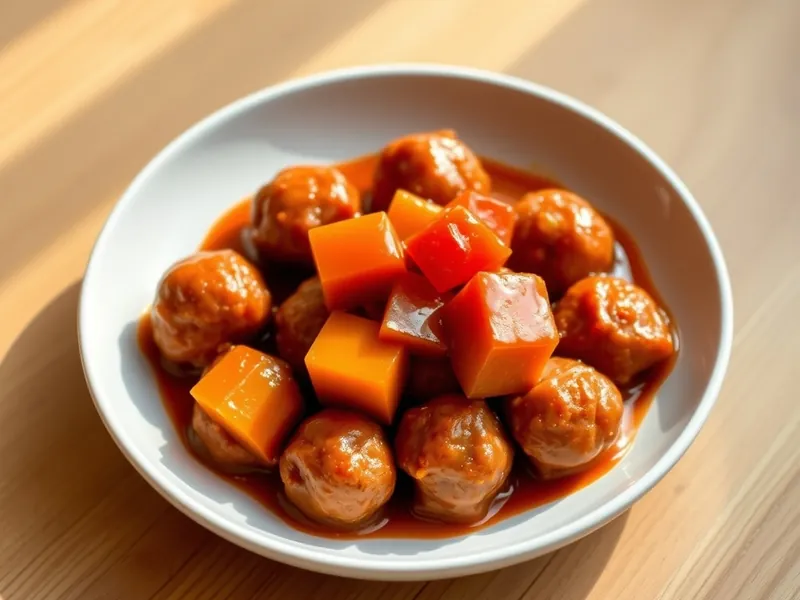

Фрикадельки в кисло-сладком соусе
Обжаренные мясные шарики с болгарским перцем в густом соусе из кетчупа, соевого соуса и уксуса
28 мин4 порц.492 ккал на порциюБ 24 · Ж 36 · У 17Азиатская кухня
Открыть в приложении: порции, таймеры, список покупок
Продукты на 4 порц.
- Фарш свино-говяжий500 г
- Яйцо куриное1 шт
- Крахмал2 ст. л.
- Перец болгарский1 шт
- Кетчуп4 ст. л.
- Соевый соус2 ст. л.
- Сахар1 ст. л.
- Уксус 9%1 ст. л.
- Вода150 мл
- Растительное масло2 ст. л.
Как готовить
- Смешайте фарш, яйцо и 1 ст. л. крахмала. Мокрыми руками скатайте около 20 шариков размером с грецкий орех.
- Разогрейте масло на среднем огне и обжаривайте фрикадельки 7 минут, перекатывая, пока они не подрумянятся со всех сторон.
- Нарежьте перец квадратами 2 см, добавьте к фрикаделькам и жарьте 2 минуты.
- Смешайте кетчуп, соевый соус, сахар, уксус, воду и оставшийся крахмал до однородности.
- Влейте соус в сковороду и готовьте на слабом огне 8 минут, помешивая, пока соус не загустеет и не станет глянцевым, а фрикадельки на разрезе не станут серыми без розового.
Совет. Крахмал перед тем, как влить соус, ещё раз размешайте: он быстро оседает на дно и может дать комки.